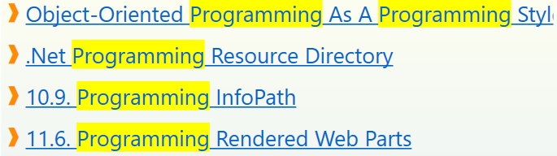

Finding OneNote Pages
The Find Pages dialog is used to find OneNote pages by applying tag and full text filters.

To activate the Find Pages dialog click or tap on the Find Pages
button of the Page Tags button group in the Home tab of the OneNote ribbon.
The Find Pages Dialog
☝️ Numbered dialog elements in the screenshot are referenced by superscripts and list item indices of the documentation below.

The search scope. Only pages in the selected scope will be included in the search result. Available scopes are:
This Section- Only pages from the current section are included in the search result.
This Section Group- Only pages from the current section group are included in the search result.
This Notebook- Only pages from the current notebook are included in the search result.
All Notebooks-
Pages from all notebooks currently open in OneNote are included in the search result.
Search query input box for full text search. Following key bindings are available while focus is on the query input box:
Perform a full text search using the terms in the query input box[2] and the selected scope 1.
The search result is passed through the tag filters 4 and the final result is displayed in the Pages panel13.
Matches of search terms with page titles are highlighted in the Pages panel 13:

Filter Configuration panels. Three filter strategies are available:
- ⋂ All of # - Pages must have all of the selected tags in order to pass the filer.
- ⊄ None of # - For pages to pass this filter none of the selected tags can be on them.
- ⋃ Any of # - Pages with any of the selected tags pass this filter.
☝️ The numbers
#in tab labels indicate the number of filter tags selected for this filter.To add or remove tags for a particular filter click or tap on its label to activate it for editing. The label of the active filter is highlighted. In the dialog screenshot the All of filter is activated and tags can added or removed.
All filters applied to the search result. If a filter does not have any filter tags selected it simply passes all pages through to the next filter:

Clear all selected tags in all filter strategies.
This is a convienent way to reset all filters with one tap or click. This button is only visible if the are filter tags selected in any but the currently active filter. To clear the selected tags from the currently active filter use this button 7
A tag selected for filtering according to the currently selected filter strategy.
The tag can be removed from the filter by tapping or clicking it.
Removes all currently selected tags from the active filter.
To remove all filter tags, including the ones from the filters which are not active, use this button5
Tag Filter Presets.
Highlights the collection of tags currently available in the Page Tags panel10 based on tags found in the selected range of pages. The tag presets are entered into the tag input box9 as comma separated list and can be used to select tags for the currently active filter.
To select all tags for filtering which exactly match one of the tags from the preset, tap or click the Select all matching tags button 11.
Tag input box.
Enter one or more tagnames (comma ',' separated) to to show only tags in the Page Tags panel10 which partially or fully match any of the typed tag names. The collection of tags in the Page Tags panel10 is updated as you type.
Following keyboard shortcuts are supported while focus is on the input box:
ESC- Clear the input box. Same as pressing the Clear button which appears next to the input box 9 once tags are typed.
SHIFT+ESC- Clear the tag input box and also clear all currently selected refinement tags5 (Same as pressing the Clear button9) and also the Clear button6.
ENTER-
Select all tags from the collection of tags in the Page Tags panel10 which fully match one of the entered tag names to happen to fully match a tag. The collection of refinement tags in the Refinement Tags panel5 and the list of found pages14 are updated accordingly.
Page Tags panel.
This panel shows the collection of tags available for filtering.
Following status information is privided in the panel header:
(
number) - The total number of tags available for filtering. This is icon only shown if no tag has been selected for filtering6 and no tag search expression has been entered in the tag input field9.Shown when one or more tags are selected for the currently active filter.
As soon as a tag is selected for filtering (selected tags are displayed in the Refinement Tags panel 6) the collection of tags available for selection is reduced to show only tags which would improve the search result. Tags are removed if:
- They would reduce the search result to nothing.
- They would not reduce the search result any further.
 This icon is present if a tag search expression has been entered
in the tag input field9. Only tags which partially or fully
match the search expression in 9 are shown.
This icon is present if a tag search expression has been entered
in the tag input field9. Only tags which partially or fully
match the search expression in 9 are shown.☝️ If the collection of tags is inconveniently large, enter a tag filter into the tag filter input box 9 to show only matching tags.
Select fully matching tags. Selects all tags from the Page Tags10 panel which fully match one of the tag names entered in the tag filter input box9.
This action does nothing if there are no tags whose names fully match the filter expression in the input box9.
A tag available for search result refinement.
On tap or click the tag will be selected for the filter an moves to the active Refinement Tags4 panel.
Tags can have following type indicators which prefix the tag name:
# - A hashtag. See the Preferences tab of the Manage Settings for tag formats.
⏹ - A hashtag imported from page content. See the Preferences tab of the Manage Settings dialog for import options.
📑 - An imported OneNote paragraph tag. See the Preferences tab of the Manage Settings dialog for import options. The Page Tags panel 10 shows two imported paragraph tags I Like It and Page Tags
Each tag is annotated with a postfix number which predicts the number of pages in the search result if this tag would be added to the filter.
The Pages search result panel.,
Displays links to all pages matching the refinement tag filter5 and the full text query specified in 2 (if available).
The Panel header shows additional status information:
number / number - Number of pages in the filtered search result / Total number of pages pages matching the search criteria.
⋂ - The set intersection symbol. Indicates that pages were filtered# by the All of filter4 and contain all tags selected for this filter.
⊄ - The not a subset of symbol. Indicates that pages were filtered by the None of exclusion filter4 and none of the pages in the result contain any tags selected for this filter.
⋃ - The set union symbol. Indicates that pages were filtered by the Any of filter and the pages contain one or more of the tags selected for this filter
🔍 - A full text search query2 was performed to obtain the pages.
The Search Result Action Menu. Click or tap to access actions for the search result14.
The available actions are.
Refresh- Refresh the search result using the current collection of filter tags4 and the current search query. This is sometimes needed when pages have been tagged while Find Pages dialog was open or the OneNote notebook was updated after a concurrent edit by someone else.
Clear Selection- Deselect all page links15 in the Pages search result panel13.
Select All- Select all page links in the in the Pages search result panel13.
Copy Links to Pages-
Copy all hyperlinks all Pages search result panel13 to the system clipboard. These links can be pasted into all HTML capable applications such as Microsoft Office.
☝️ Links to pages in the OneNote recycle bin will be automatically removed.
Save Search Result- Saves all links from the Pages search result panel13
together with all search parameters
(query2 and refinement tags4) to a new
OneNote page in the current section.
See Saved Search for instruction on how
to update the search result with the
Update action on the OneNote
Homeribbon or the _Update_action on Tag Pages dialog. Tag Selected Pages- Opens the Tag Pages dialog to apply tags to all pages selected in the Pages search result panel13.
Mark Selected Pages-
Adds a ⭐ marker tag to all selected pages. This marker tag can be managed like a regular Page Tag and also can participate in tag based searches. Typically this marker is used for bookmarking.
A link to a page in the search result. Tap or click on the link to navigate to the page in OneNote.
Links can be selected by clicking on the
❱symbol. Link selections are required for some actions in the Search Result Action Menu14.Following selection methods are available:
- Multi-selection of different links.
CTRL+LeftClickon the ❱ symbol of each tag.- Range Selection
-
CTRL+LeftClickon the ❱ symbol of the first link of the range.SHIFT+LeftClickon the ❱ symbol of the last link in the range.
- Multi-selection of several disjoint ranges
-
CTRL+LeftClickon the ❱ symbol of the first link of the range.SHIFT+CTRL+LeftClickon the ❱ symbol of the range.- Repeat 1 and 2 for other ranges
Activate Tracking Mode. Automatically tracks related pages based on the tags of the current page. When tag tracking is enabled:
- the current page's title is displayed next to the tag tracking checkbox.
- the tags on the current OneNote page are extracted and pre-set as filter for the Page Tags panel10 Only tags which fully or partially match one of the tags in the tag input panel [8][#Dia-8] will now be shown.
- The Select fully matching tags11 action to quickly get all pages with these tags.
Workflows
In the following section typical search workflows are explained step-by-step.
Finding Pages by applying Filter Conditions
The steps below are all optional and can be performed in any order:
- Select a range where to define pages in1.
- Type one or more search terms into the search input box2 and either press
ENTER, or press the search button3.- Add tags from the Page Tags panel10 to the filter condition. This can be done in the following ways:
- by tapping or clicking on the tags in the Page Tags panel10.
- by entering one or more full or partial tag names (comma-separated) into the tag input panel8. To select the desired tags press
ENTERor hitting the Add button11. This adds all tags from the Page Tags panel10 which fully match one of the entered tag names to the filter5. Alternatively you can tap or click on individual tags in the Page Tags panel10.- by selecting a preset7 to enter the tags from a range of pages into the tag input box and then hitting the Add button11 to add all tags from the Page Tags panel10 which fully match one of the entered tag names to the filter5.
:point-up: After any of the steps above the search result14 is updated.
Handling large Numbers of Tags
Eventually, as the used tags increases the Page Tags panel10 will become quite crowded. This makes tag selection to add them to the filter condition increasingly difficult because there will be a lot of scrolling to get to the desired tags. To reduce the number of tags shown in the Page Tags_ panel10 type a comma-separated list of tag names into the tag input box8. This will the show only tags which match one of the typed tags. Instead of typing tags you may want us a preset^^ to enter tags from a range of pages into the tag input box8
At any time, you can start filtering by adding or removing tags to the filter condition.
Refining a full-text Search Query using tags
We start with a full-text search query which we refine by a adding tag filters.
- Pick a scope 1 to define the range of pages to search in.
- Enter one or more search terms2.
- Tap or click the search button 3 or press
Enterwhile focus is still in the search input box2.to perform the search. When the search is completed, a list of pages matching the search term(s) is displayed in the Pages search result panel14. Matches of search terms in page titles are highlighted16.- To narrow down (refine) the search result, select one ore more tags for filtering. This can be done in several ways:
- Click the hyperlinks in the Found Pages panel (5) to navigate to the corresponding _OneNote_pages. for more ways to work with the search result see [[Working with the Search Result]]